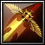

Oceanus, the Sword of Light
[1/2h Sword]
+35,700 Damage
+1,775 Strength
+1,875 Agility
+15% Attack Speed
Passive: 8% Chance to do 15x Main Stat magical damage on attack
Passive: "Gathering Light" Enhance next attack with light on skill cast dealing 20,000+3x Main Stat pure damage and healing yourself for 810+0.12x Main Stat (30% chance to Crit dealing 50,000+7.5x Main Stat pure damage and healing yourself for 2025+0.3x Main Stat) Also receive 1 stack for active (stacks up to 6 times, permanent until used)
Active: Consume stacks to spawn up to 12 Spears of Light (2 per stack) which each deal 12.5x Main Stat damage and stun a single target briefly.